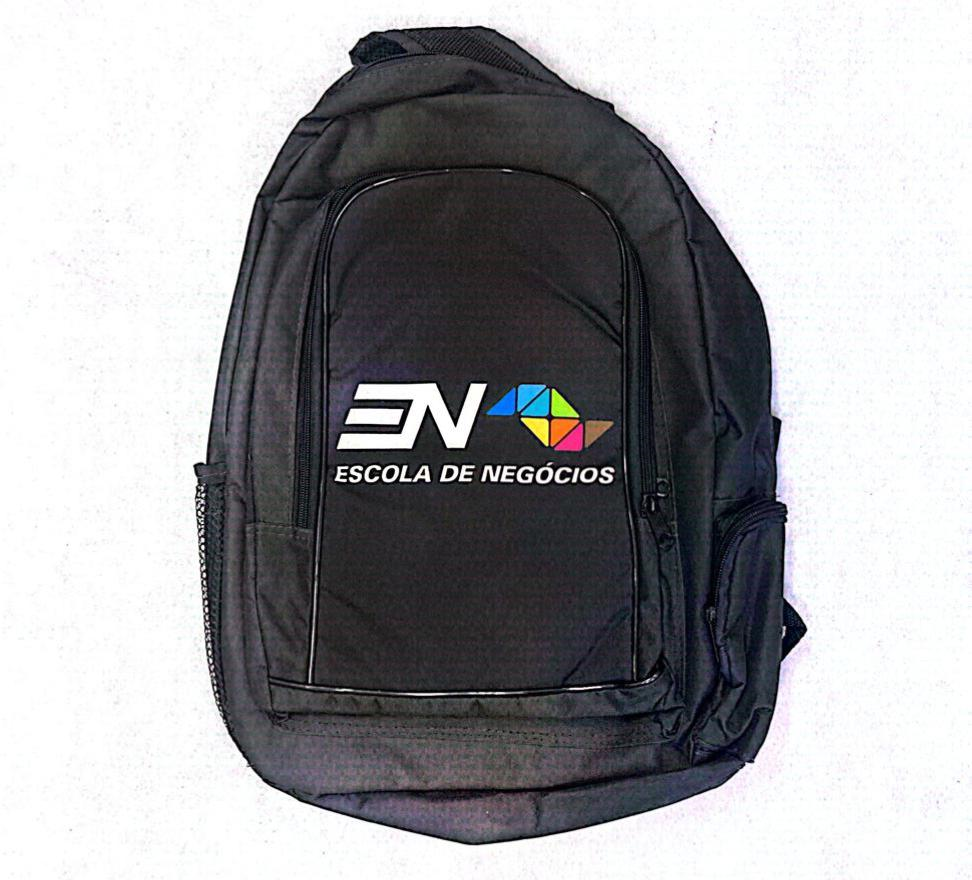
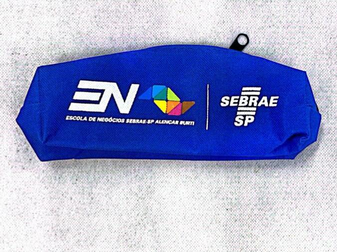
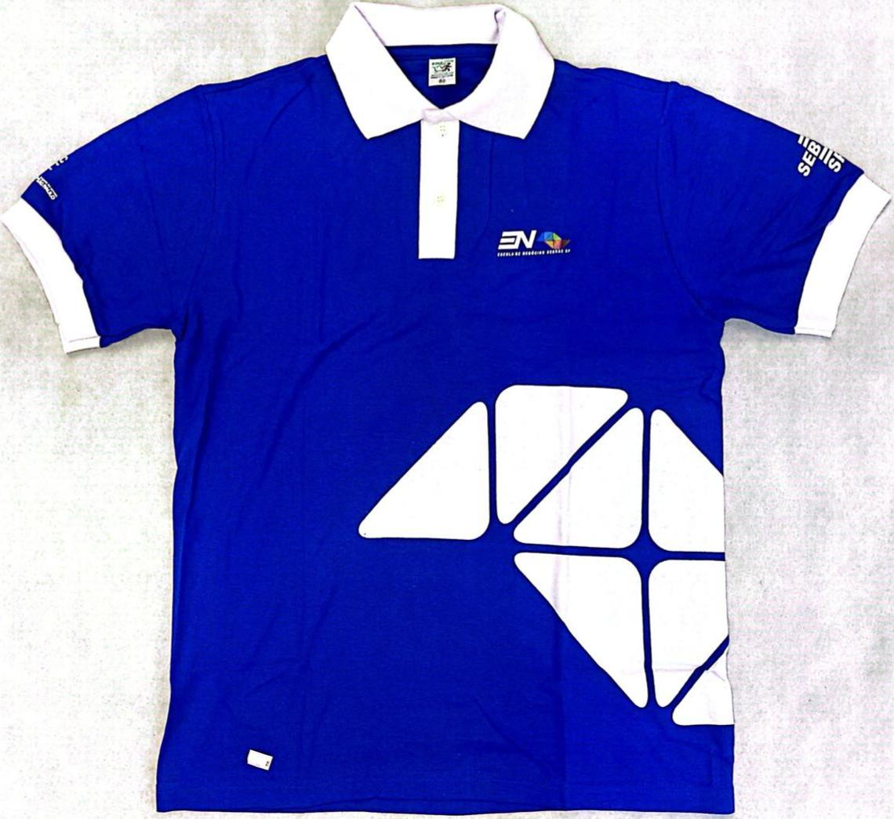
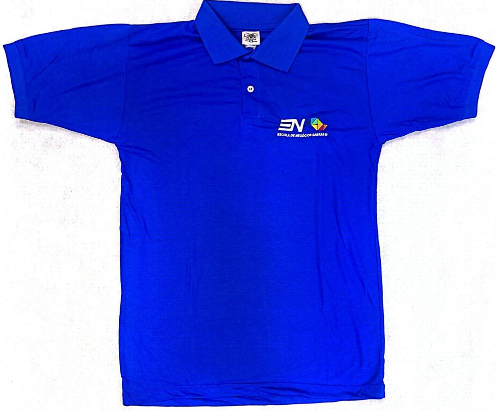

Museu Etec Sebrae: Sua origem e propósito
Biblioteca da Etec Sebrae: Conheça sua história
A biblioteca se situava na Rua José Getúlio, 89, no terceiro andar...

O software utilizado pela biblioteca era o Thesaurus...
Da Origem à Atualidade: Uniformes e Objetos da Etec Sebrae
Essa matéria tem como objetivo descrever e analisar os itens de apoio visual e institucional oferecidos pelo Sebrae-SP, por meio da Escola de Negócios, aos alunos envolvidos em iniciativas empreendedoras. Por meio de elementos como mochilas, estojos e uniformes personalizados, observa-se o cuidado com a identidade visual, a valorização do empreendedorismo e o incentivo à construção de uma imagem profissional desde os primeiros passos no ambiente educacional. Os objetos descritos neste relatório não são apenas utilitários, mas carregam consigo simbologias que fortalecem o vínculo dos estudantes com a proposta de inovação, desenvolvimento e excelência promovida pela parceria entre o Sebrae e instituições como a ETEC.
A mochila É preta, com linhas sóbrias e utilitárias feita de tecido resistente e costura reforçada. No bolso frontal, bem centralizado, o logo da Escola de Negócios domina o espaço com orgulho: o “EM”, em letras modernas, é acompanhado por um símbolo geométrico multicolorido, que sugere diversidade, dinamismo e movimento – elementos centrais na vida empreendedora. Abaixo do logotipo, em letras brancas e firmes, lê-se: “ESCOLA DE NEGÓCIOS”. A mochila É preta, com linhas sóbrias e utilitárias feita de tecido resistente e costura reforçada. No bolso frontal, bem centralizado, o logo da Escola de Negócios domina o espaço com orgulho: o “EM”, em letras modernas, é acompanhado por um símbolo geométrico multicolorido, que sugere diversidade, dinamismo e movimento – elementos centrais na vida empreendedora. Abaixo do logotipo, em letras brancas e firmes, lê-se: “ESCOLA DE NEGÓCIOS”.
Na imagem, há um estojo azul com os logotipos da Escola de Negócios Sebrae-SP Alencar Burti e do Sebrae-SP, instituições que simbolizam conhecimento, inovação e apoio ao empreendedorismo. O design moderno, com linhas retas e cores vibrantes, reflete dinamismo, profissionalismo e transformação. Mais do que um simples objeto, este estojo carrega o significado de quem busca crescimento, aprendizado e desenvolvimento. Ele representa a jornada de empreendedores que, com o apoio do Sebrae, transformam ideias em negócios e desafios em oportunidades.
Cor predominante azul com detalhes brancos, o que remete à identidade visual do Sebrae. O logotipo "EN" e a inscrição “Escola de Negócios Sebrae-SP” representam a proposta da instituição de ser uma escola voltada exclusivamente para negócios. O gráfico com formas triangulares e geométricas remete ao conceito de construção e inovação — muito alinhado à ideia de empreendedorismo. As inscrições nas mangas fazem referência ao Sebrae-SP, reforçando a parceria institucional.
Esta é uma blusa polo de manga curta, na cor azul royal vibrante, feita provavelmente de poliéster ou algodão misto, tecido leve e confortável — muito usado em uniformes escolares e institucionais. Ela possui gola tradicional de polo, com dois botões no colarinho. No lado esquerdo do peito, há um bordado com o logotipo da ETEC (Escola Técnica Estadual) — identificado pelas letras "EN" e pela expressão "ESCOLA DE EDUCAÇÃO EXCELÊNCIA" bordada logo abaixo. O logo também apresenta um pequeno símbolo geométrico colorido (amarelo, verde e azul), remetendo às cores da bandeira do Brasil, reforçando a identidade educacional pública paulista.
Participantes da pesquisa: Fernanda Viana, Gabriela Ferreira, Miguel Mello e Thais Luana.
Projeto Mine: Explorando o Metaverso sem Barreiras
Como funciona?
O projeto "Mine" foi desenvolvido pelos alunos da 3ª série...

Nenhum resultado encontrado
Tente outro termo na pesquisa.